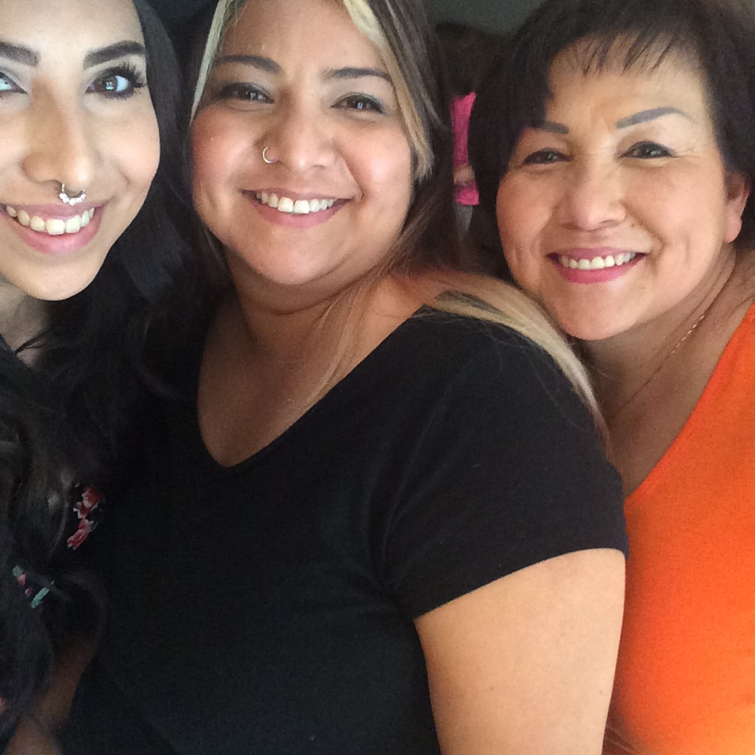

I was born and raised in Fresno, California — the best little city in the USA. My father is a first generation Mexican-American, and my mother is a migrant from El Salvador, I like to say I am somewhere inbetween being a first-gen Latin-American and second-gen. I like to go with first-gen.5! Early in life it was instilled in me to think outside of the box, be creative. Some of my first memories are drawing, making up skits with my brother, conducting plays with my neighbors, writing stories, painting, and even picking up an instrument from time to time. I grew up telling people I wanted to be an artist. Most people assumed I meant a painter — I don't even think I knew what I meant by that.
Like many "weird" teenagers, I did not enjoy middle school or highschool. Always an outlier, a little outspoken, and overall strange to others, I was very eager to finish school. I graduated highschool in only 3 years, a year early, at the age of 17. I was only the third person in 3 generations of Guerra's to graduate, let alone finish highschool. It left me feeling obligated to take the next steps, University. I went to the University of Northern Colorado in Greeley, Colorado that following fall semester. It was my first time ever leaving California! Growing up I always thought "why would anyone choose to live in Fresno?" I quickly found my answer when I left. There truly is nothing like Fresno; the people, the food, the languages, the weather. I found a new admiration for my city and my community.
I dropped out after one semester in Colorado. A few months later I moved to Santa Monica and enrolled in the Art Institute of Los Angeles. I thought maybe if I was learning something I actually enjoyed, then I would finish school and finally get a degree like everyone expected me to. I learned design fundamentals, color theory, and was introduced to coding for the first time. I gained so much knowledge and many useful skills I still use, but once again all these feelings of inadequacy came up. I went to school for 3 years and dropped out with only a few more required classes left. It was imposter syndrome once again. I left and moved back home with no degree, and an immense amount of student loans. I repeated this pattern over and over, at least 7 more times over the course of 10 years.
One day I was complaining to a coworker about feeling so stuck and I wanted an actual career, and in a subject I actually like. She told me about her cousin who is in the tech field and went to Bitwise. I had heard of Bitwise before, but had no idea they even offered classes. I checked out the website on my lunch break and I enrolled to start a class the next day. No one belongs here more than you, it rings through my mind anytime I have self doubt now. Hearing testimonies from professionals who were once in my position, and instructor after instructor, assuring me that no one in their field knows everything melted away all those feelings I once struggled with.  Growing up I never saw someone who looked like me, a queer, first-gen woman doing anything in the tech field, I never knew anyone in the tech field for that matter. Seeing people who look like me, doing things I could never even fathom, here at Bitwise, assured me I was 1,000% in the right place! By the end of my Website for Beginners course I had been nominated for an apprenticeship with Bitwise, and am eagerly awaiting an opportunity that may fit my interests. In the mean time I am working on building community, learning, and being the best version of myself I can possibly be. I'm taking this journey and trying something new for: my ancestors, my future family, and for anyone who may look like me and wonder if there's a place for them out there, because there truly is.